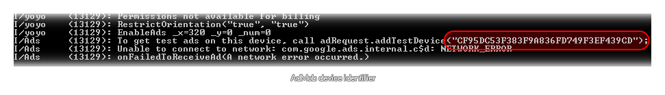

There are a number of different companies that offer mechanisms to add advertising to your games, and there are others that permit you to integrate some form of analytics (so that you can see how your game
is expanding in the given market place). GameMaker:Studio has a number of functions included as standard to make adding these services a simple matter.
NOTE: This functionality is limited to the Professional Version of GameMaker:Studio.
Once you have set up your advertising provider in the Global Game Settings - Advertising Tab, you will need to write them into your game using the following simple functions to control how the adverts are used and displayed:
We also support basic interstitial ads from Admob with the following functions:
Apart from these basic ads, some ad providers (like Supersonic and AdColony) offer more interactive interstitial ads that can be used to generate virtual currency for the user. However for these ads to
function correctly you will need to have set up your own database to record the currencies for each player, which also means you should create your own login system to get the player id, or have some mechanism
in place to identify each installation of your game to the database.
When you activate one of these ads it can be an "offerwall" (essentially a page to promote several different advertising campaigns) or a video and when the player watches an ad or clicks on an offer, the ad
company calls your callback on the server you have set up to award the currency to the player. Note that it could be 15 minutes after the player has watched the movie (or clicked an offer) or it could be instantaneous
so you must have that backend database set up and active 24 hours a day.
NOTE : To retrieve the currency for your player, you will need to use the http_get and
http_post_string functions.
The following functions exist for ads from these companies:
Certain providers provide the possibility to test ads on your device before you actually finalize their use and so GameMaker:Studio inlcudes the option to switch testing on in the Global Game Settings - Advertising Tab. This option will affect your app differently depending on the target platform and the provider selected.
Android
On Android devices when testing is active, all ads will be displayed with a blue background that permits you to see what position and area is being used for the ad as well as see how well the test ads fit the specified ad space. Not all ad providers permit ad testing so below is a brief summary of those that do and how to set them up:
- AdMob - You must first run your game once with AdMob ads enabled (but not testing!), making sure that your key0 advertising key is correct and using the ads_enable function. If you then look at the ADB console output, near the bottom you should see the following line:  The device id number should then be copied into the appropriate space on the Advertising tab of the global Game Settings, and you should now flag the "test Ads" check-box to switch ad testing on. When you run your game again, this will be confirmed to be working by the ADB console output showing the message “Admob using test adverts”.
- Ad Colony - You can see their test videos and offerwalls by configuring the test options through your pofile page on their site http://www.adcolony.com/
- Millennial Media - You should set the key0 app id to be "28911" and flag the "Test Ads" check-box to start receiveing test ads on your device. This will also raise the number of event logs that are registered to make debugging easier.
iOS
iOS ad testing is limited to only a few companies currently and these are listed below along with instructions on how to set them up:
- AdMob - Unlike on Android devices, Admob for iOS simply needs to be activated on the Advertising tab and have the "Test Ads" check-box ticked and it will then work as it should, sending test ads and ignoring clicks.
- iAds iAds will only use test ads if you are running a signed distribution build and this is regardless of the settings in GameMaker:Studio as it is done automatically by iAds.
- Millennial Media – As with Android, the event log levels are increased to debug levels, but instead of having a universal testing app id, you must register your device id on the mmedia.com site to receive test ads.
HTML5
Currently the support for testing ads on HTML5 has to be configured through the contol panel of your developer account with the chosen company, with the "Test Ads" option in the Global Game Settings doing nothing at the moment. It is simply provided to make integrating future advertising partners easier.
Windows Phone
To test ads with Windows phone, you will need to still input the different ad unit ids that you wish to have (either with real ids from the Microsoft pubCenter or with "fake" values which the SDK will use to simlulate a real ad) into the different sections and select the ad type you wish to display. Then tick the "Test Ads" option in the Global game Settingds to see them. Note that the emulator will always show test ads, no matter what settings you have.
Pocket Change is a universal loyalty currency which permits you to Gift users Pocket Change tokens by playing your games and these tokens travel with the user between games. The user can then exchange them
for real world gifts, like discount cards and specialist products meaning that this is an excellent option when you are thinking about user retention. The Pocket Change integrated api for GameMaker:Studio
is incredibly simple to use, but will require that you are signed up for the Pocket Change service first.
When you have done that, you can use the following functions in your games (don't forget to set up the game correctly in the
Global Game Settings - Pocket Change Tab):
Your game can be tracked by different Analytics providers (principally Flurry and Google Analytics) which can be set up in the special Global Game Settings - Analytics Tab. In general, the analytics are autonomoous, with each provider tracking the product and making the information available through their own web pages, but there are two extra functions supplied by GameMaker:Studio to permit you to send a text event to the analytics provider which you can then use to track special features from within your game: